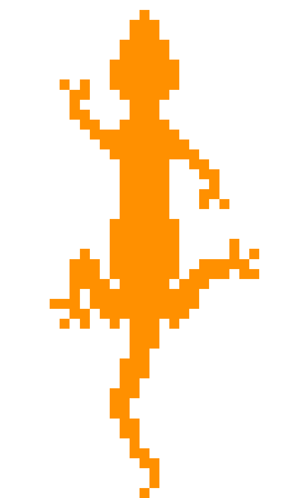
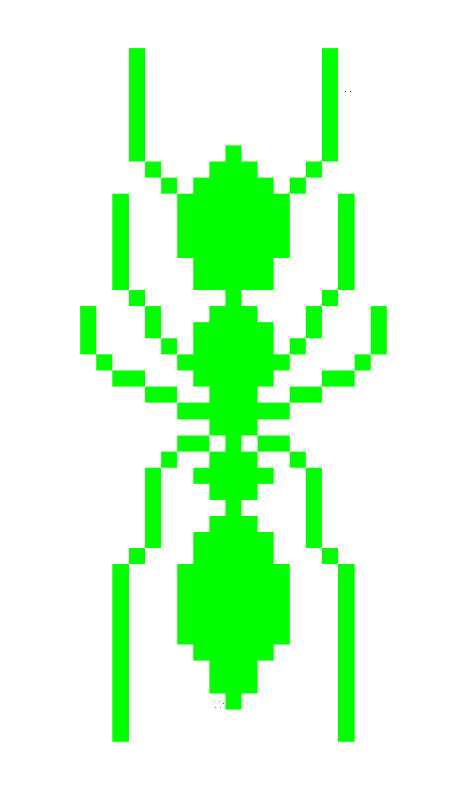
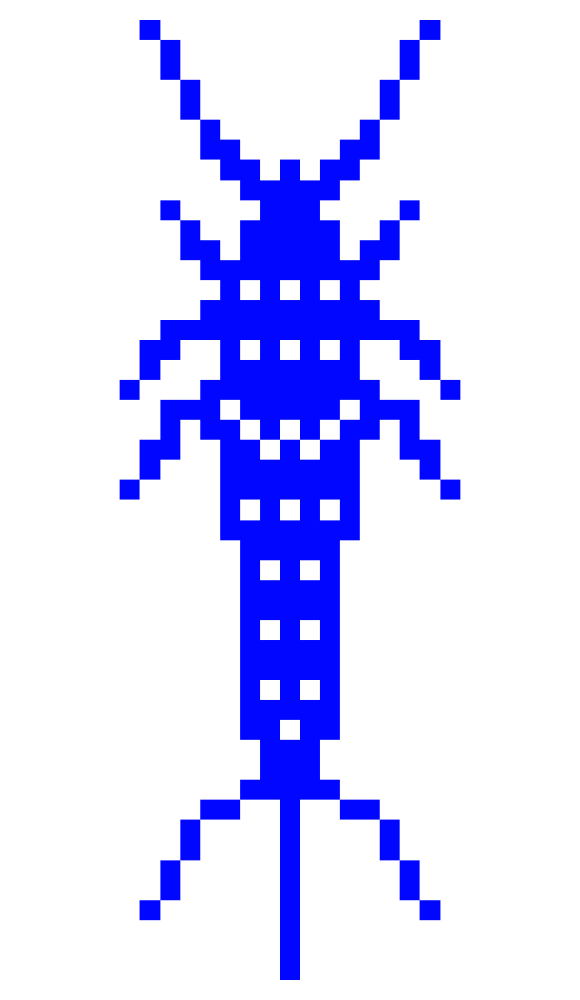
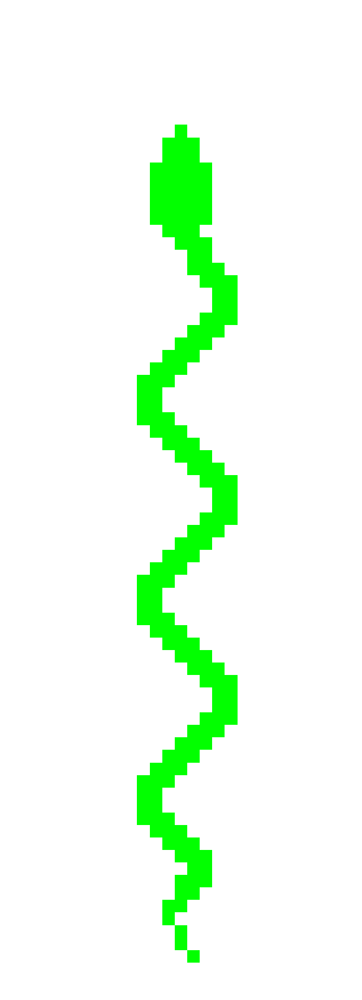

Welcome to the Grid.
Don't let its flatness fool you.
Created via the medium of textiles, the map is a tangible representation of the intangible digital realm. A birds-eye view of an infinitely expanding, growing grid, forever being filled in. Watch the Pawns of the game within this architecture that is so heavily dependent on the maintenance of binary codes to sort our data. Knit, purl. Knit, purl.
Meet the Pawns.
Creatures inhabit the grid, machine-stitched into their corners. They are connected through a modular system of knitted cables and cords. A plug-in system of paths and trajectories within the labyrinth of the grid. Inputted and outputted using optimized trajectories, they force-feed each other their data points.




Only those with eyes can see.
Take out your looking glass.
Discover a layer of curated visibility using the AR Artivive app (App Store / Google Play Link) on your phone. Explore the map (scan the image using the app from phone) and its obstacles, some more opaque than others. Orient yourself. Investigate the nonsensical elements as they rise to the surface, building upon each other.
Don't let flatness fool you, the way it has long done through your many screens. Remember not to mistake subjective for objective experience. Most importantly, look out for glitches in the algorithm - those interferences and moments that should not have appeared there.